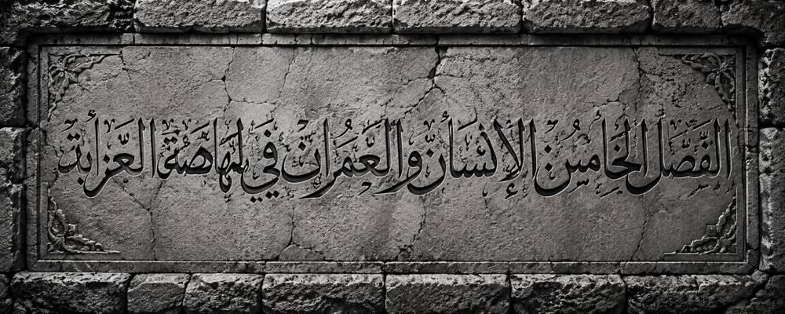
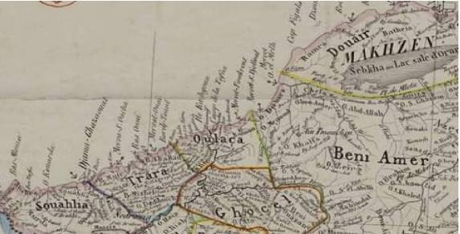
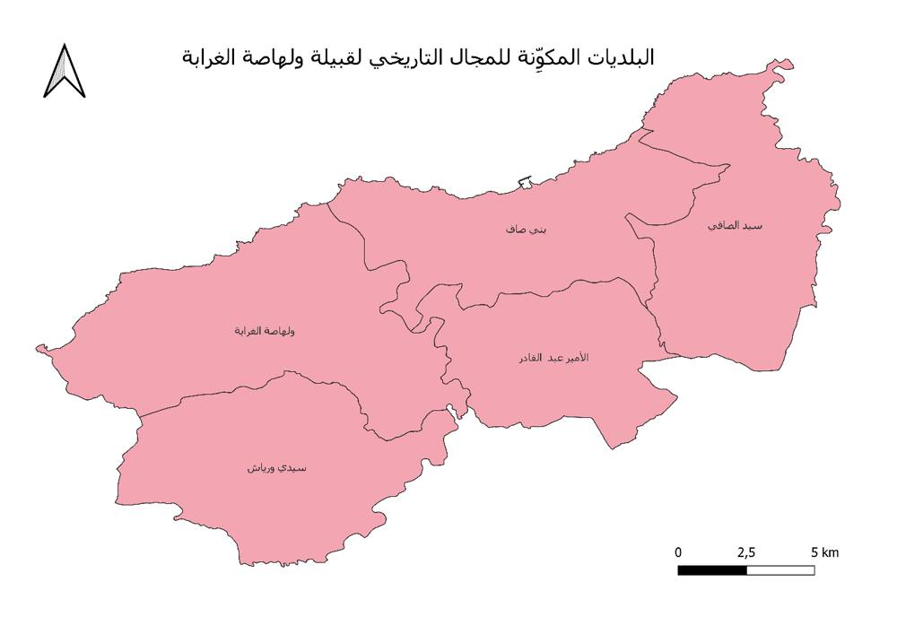
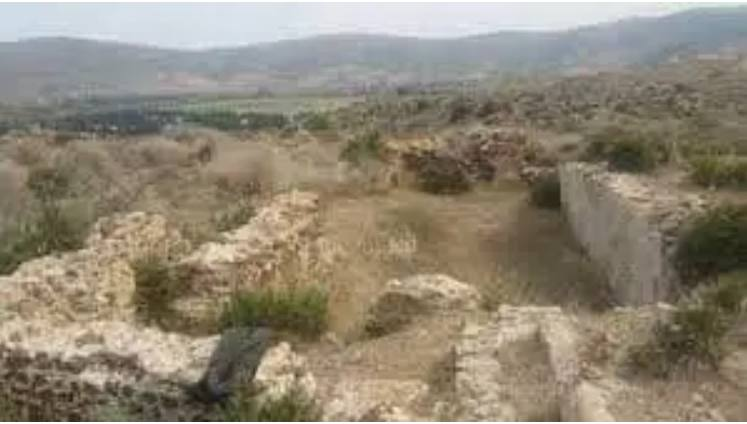
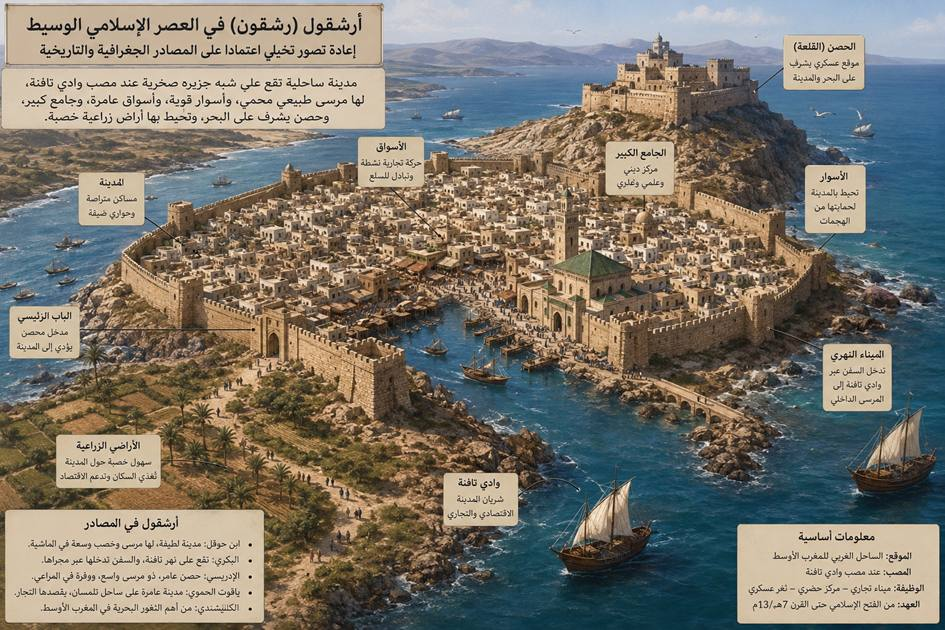
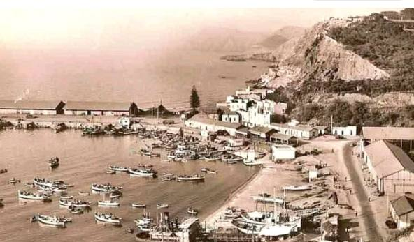
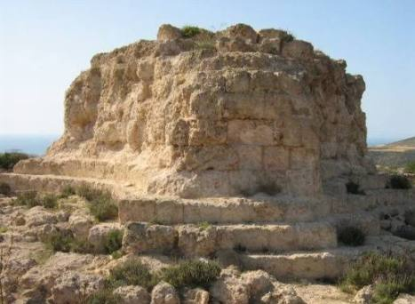
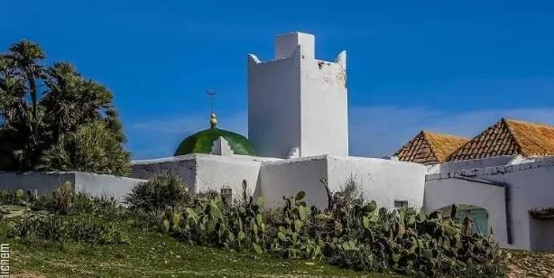
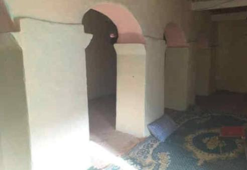

الفصل الخامس:الإنسان والعمران في ولهاصة الغرابة

مقدمة
يُشكّل التراث الديني والأثري أحد أهم المكونات الحضارية التي تكشف عن عمق الاستيطان البشري واستمرارية العمران في المجال التاريخي لقبيلة ولهاصة الغرابة، إذ يحتفظ هذا المجال بجملة من المعالم التي توثق لتعاقب الحضارات منذ العصور النوميدية، مرورًا بالفترة الرومانية، ثم الفتح الإسلامي، وصولًا إلى العصر الحديث. ولا تقتصر أهمية هذه المعالم على قيمتها الأثرية أو المعمارية، بل تمثل وثائق تاريخية حية تُسهم في إعادة بناء المشهد الحضاري للمنطقة، وتُبرز مكانتها ضمن الفضاء التاريخي للمغرب الأوسط.185
وقد أسهم الموقع الجغرافي للمجال الولهاصي، المطل على البحر الأبيض المتوسط والمتحكم في مصب وادي تافنة، في جعله فضاءً للتواصل بين الداخل والساحل، ومجالًا لتلاقي التأثيرات الحضارية القادمة من حوض البحر المتوسط. ففي هذا المجال قامت سيقا، عاصمة مملكة الماسيسيل، التي كانت مركزًا سياسيًا وعسكريًا واقتصاديًا بارزًا خلال القرن الثالث قبل الميلاد، ولا تزال آثارها، بما في ذلك الضريح الملكي النوميدي والمنشآت الجنائزية المجاورة، شاهدة على تطور العمارة الجنائزية لدى الممالك الأمازيغية القديمة، وعلى المكانة التي بلغتها المنطقة في تاريخ شمال إفريقيا186.
ومع الفتح الإسلامي للمغرب الأوسط، عرف المجال التاريخي لقبيلة ولهاصة الغرابة تحولًا عميقًا في بنيته الدينية والعمرانية، حيث انتقلت مراكز النشاط الحضري تدريجيًا من سيقا إلى أرشقول (رشقون)، التي أصبحت ثغرًا بحريًا مهمًا يربط المغرب الأوسط بالأندلس، قبل أن تتعزز الحياة الدينية والعلمية بانتشار المساجد والزوايا والكتاتيب القرآنية في مختلف قرى المنطقة. وقد أدت هذه المؤسسات أدوارًا متعددة، فلم تكن مجرد أماكن للعبادة، بل تحولت إلى مراكز للتعليم الشرعي، وتحفيظ القرآن الكريم، ونشر المذهب المالكي، وإعداد العلماء والفقهاء، فضلاً عن دورها في الإصلاح الاجتماعي، وتسوية النزاعات، وتعزيز روح التضامن بين القبائل.187
وتبرز ضمن هذا التراث الديني معالم ذات قيمة تاريخية وحضارية كبيرة، وفي مقدمتها مسجد سيدي يعقوب، الذي ظل منذ القرن الثامن الهجري/الرابع عشر الميلادي منارةً للعلم والعبادة، ومسجد البوحميدي، الذي يمثل نموذجًا للعمارة الدينية المحلية ويعكس استمرارية الوظيفة الدينية للمساجد الريفية في غرب الجزائر. كما ارتبطت بهذه المساجد زوايا وأضرحة لعدد من العلماء والأولياء الذين كان لهم أثر واضح في ترسيخ المرجعية المالكية ونشر الثقافة الإسلامية، وأسهموا في الحفاظ على الهوية الدينية والثقافية للمجتمع الولهاصي عبر مختلف المراحل التاريخية.188
ولا يمكن دراسة هذه المعالم بمعزل عن سياقها التاريخي والحضاري، إذ إنها تمثل حلقات متكاملة في تطور العمران بالمجال التاريخي لقبيلة ولهاصة الغرابة، وتعكس الانتقال من المعمار الجنائزي النوميدي إلى العمارة الدينية الإسلامية، بما يجسد استمرارية الاستيطان البشري وتكيفه مع التحولات السياسية والثقافية التي عرفتها المنطقة على امتداد أكثر من ألفي سنة. كما تكشف عن الدور الذي اضطلع به هذا المجال في الربط بين الساحل والداخل، وبين المغرب الأوسط والعالم المتوسطي، الأمر الذي أكسبه مكانة متميزة في تاريخ الغرب الجزائري.
وانطلاقًا من ذلك، يهدف هذا المبحث إلى دراسة أبرز المعالم الدينية والأثرية بالمجال التاريخي لقبيلة ولهاصة الغرابة، من خلال إبراز خصائصها المعمارية، ووظائفها الدينية والاجتماعية، ودورها في تشكيل الهوية الحضارية للمنطقة، مع الاعتماد على المصادر التاريخية، والوثائق الأثرية، والدراسات الحديثة، بما يسمح بتقديم قراءة علمية متكاملة لمسار تطور التراث الديني والعمراني في هذا المجال منذ العصور القديمة إلى العصر الحديث.189
.2.5المجال التاريخي لقبيلة ولهاصة الغرابة
يُعدّ المجال التاريخي لقبيلة ولهاصة الغرابة أحد أبرز المجالات القبلية في أقصى الغرب الجزائري، إذ يمثل وحدة ترابية متجانسة حافظت على استمراريتها عبر مختلف المراحل التاريخية، رغم ما شهدته المنطقة من تحولات سياسية وإدارية. وتؤكد الخرائط الفرنسية المبكرة الخاصة بالتقسيمات القبلية، ولا سيما خريطة Carte de l'Algérie divisée par tribus(أنظر الشكل 7)، أن قبيلة ولهاصة شكّلت مجالًا قبليًا واضح المعالم ضمن إقليم وهران، متميزًا عن المجالات القبلية المجاورة190.ويؤكد عبد القادر بن يخلف أن المجال التاريخي لقبيلة ولهاصة الغرابة يتجاوز الحدود الإدارية الحالية لبلدية ولهاصة، ويمتد ليشمل من المجال الذي تشغله اليوم دائرتا ولهاصة وبني صاف. ويرى أن مدينة بني صاف لم تكن كيانًا قبليًا مستقلًا، وإنما نشأت خلال الفترة الاستعمارية فوق جزء من أراضي القبيلة، الأمر الذي يجعلها جزءًا من المجال التاريخي لولهاصة الغرابة، رغم استقلالها الإداري لاحقًا191.
ويمتد هذا المجال شرقًا إلى الحدود الإقليمية مع أولاد الكحل، التي تمثل بداية مجال قبائل بني عامر الهلالية، بينما يحده غربًا مجال بني خلاد، الذي يمثل بداية المجال القبلي لقبائل كومية. أما شمالًا فينفتح على البحر الأبيض المتوسط، الذي شكّل عبر التاريخ الواجهة البحرية للقبيلة ومصدرًا مهمًا لنشاطها الاقتصادي والدفاعي، في حين يمتد جنوبًا إلى منطقة عين الطلبة، التي تمثل الحد الفاصل مع مجال قبائل الغواسل. وقد منح هذا الموقع الجغرافي القبيلة أهمية استراتيجية، إذ أشرفت على الممرات الرابطة بين الساحل والداخل، وأسهمت في حماية الثغور الغربية وإقليم ترارة عبر مختلف الحقب التاريخية.

الشكل 7. المجال التاريخي لقبيلة ولهاصة الغرابة كما تُظهره الخريطة الفرنسية للتقسيمات القبلية بإقليم وهران سنة 1846
ويقابل هذا المجال التاريخي، في التقسيم الإداري الحالي، دائرتا ولهاصة وبني صاف الواقعتان في الشمال الغربي لولاية عين تموشنت. وتضم دائرة ولهاصة بلديتي ولهاصة وسيدي ورياش، بينما تضم دائرة بني صاف بلديات بني صاف وسيدي صافي وعين الأربعاء. وتمثل هذه البلديات الامتداد الإداري المعاصر للمجال التاريخي لقبيلة ولهاصة الغرابة، الذي حافظ على وحدته الجغرافية والبشرية رغم ما تعرض له من إعادة تنظيم إداري خلال الفترة الاستعمارية. ومن ثم، فإن المجال التاريخي للقبيلة لا يقتصر على بلدية ولهاصة الحالية، بل يشمل كامل الفضاء الممتد عبر دائرتي ولهاصة وبني صاف(أنظر الشكل 8)، باعتبارهما الامتداد الإداري الحديث للمجال القبلي التاريخي الذي حددته المصادر الكارتوغرافية والوثائق التاريخية منذ القرن التاسع عشر.192

الشكل .8 الامتداد الإداري للمجال التاريخي لقبيلة ولهاصة الغرابة وفق البلديات الحالية
.3.5التركيبة السكانية التاريخية للمجال الولهاصي
تشير المصادر التاريخية، وفي مقدمتها كتاب عبد القادر بن يخلف، ولهاصة: تاريخ وأصالة، إلى أن المجال التاريخي لقبيلة ولهاصة الغرابة تميز عبر مختلف مراحله التاريخية بتركيبة سكانية متنوعة، تشكلت نتيجة تعاقب موجات من الاستقرار والهجرة، غير أن هذا التنوع لم يغير من حقيقة أن المكون الولهاصي ظل يمثل النواة السكانية الأصلية للمجال، في حين اندمجت به عناصر بشرية أخرى عبر فترات تاريخية متعاقبة.
ويمثل الولهاصيون السكان الأصليين للمنطقة، وهم أحد بطون نفزاوىالتي استوطنت الشريط الساحلي الغربي للجزائر منذ فترات مبكرة، واستقرت في المجال الممتد من أولاد الكحل شرقًا إلى بني خلاد غربًا، ومن البحر الأبيض المتوسط شمالًا إلى عين الطلبة جنوبًا. وقد أسست هذه القبيلة مداشرها وقراها التاريخية، وشكلت الإطار الاجتماعي والسياسي الذي حافظ على وحدة المجال الولهاصي عبر مختلف العصور.
ويجاور ولهاصة من الجهة الغربية قبائل كومية، وهي قبائل زناتية تشترك معها في الأصل الإثني، مع احتفاظ كل منهما بمجالها الترابي وتنظيمها القبلي المستقل. وقد قامت بين القبيلتين علاقات جوار ومصاهرة وتبادل اقتصادي، دون أن يؤثر ذلك في استقلال كل منهما عن الأخرى.
ومع استقرار الدولة الإسلامية بالمغرب الأوسط، شهدت المنطقة وصول مجموعات عربية، خاصة بعض بطون بني هلال وبني عامر، التي استقرت أساسًا في المناطق الداخلية والشرقية المجاورة للمجال الولهاصي، كما استقرت بها بعض الأسر الشريفة، ولا سيما السليمانيون والأدارسة، الذين ارتبط وجودهم بالزوايا والتعليم الديني، واندمجوا تدريجيًا في المجتمع المحلي من خلال المصاهرة والعلاقات الاجتماعية، مع احتفاظهم بأنسابهم الخاصة.
وخلال الفترة الاستعمارية الفرنسية، عرف المجال الولهاصي تحولات ديموغرافية عميقة نتيجة إنشاء مدينة بني صاف سنة 1876م كمركز استيطاني وميناء لتصدير خام الحديد المستخرج من المناجم المجاورة. ولتوفير اليد العاملة اللازمة لاستغلال هذه المناجم، استقدمت الإدارة الاستعمارية الفرنسية عددًا معتبرًا من سكان قبائل بني يزناسن القاطنين بالمناطق الحدودية الجزائرية والمغربية، مستفيدة من خبرتهم وقرب موطنهم الأصلي، كما استقدمت عمالًا من مناطق جزائرية أخرى، إلى جانب المستوطنين الأوروبيين، ولا سيما الفرنسيين والإسبان والمالطيين والإيطاليين. وقد أدى ذلك إلى تشكل مجتمع حضري متعدد الأصول داخل مدينة بني صاف، بينما حافظت المداشر والقرى على غلبة العنصر الولهاصي، الذي ظل يشكل المكون التاريخي الأصيل للمجال.
كما أدت سياسة الحالة المدنية التي انتهجتها الإدارة الاستعمارية ابتداءً من سنة 1882م إلى تفكيك البنى القبلية التقليدية، وذلك بتحويل الانتماءات العشائرية إلى ألقاب عائلية مستقلة، وهو ما نتج عنه ظهور العديد من الألقاب المتداولة اليوم، مع بقاء أصولها القبلية مرتبطة بالمكونات التاريخية للمنطقة.
وعليه، فإن التركيبة السكانية للمجال التاريخي لقبيلة ولهاصة الغرابة يمكن تصنيفها إلى أربع مجموعات رئيسة: السكان الأصليون من ولهاصة، والقبائل الزناتية المجاورة وعلى رأسها كومية، والعناصر العربية التي استقرت بالمنطقة منذ العصر الوسيط، ثم المجموعات الوافدة خلال الفترة الاستعمارية، وفي مقدمتها عمال بني يزناسن والمستوطنون الأوروبيون. وقد أسهم هذا التنوع في إثراء النسيج الاجتماعي للمنطقة، دون أن يمس الهوية التاريخية للمجال الولهاصي، التي ظلت قائمة على أساس الانتماء إلى قبيلة ولهاصة الغرابة.
وفقًا لآخر المعطيات الديموغرافية، يبلغ عدد سكان بلدية بني صاف 42,554 نسمة، بينما يرتفع العدد إلى 54,620 نسمة على مستوى دائرة بني صاف، بعد احتساب البلديات التابعة لها إداريًا، وهي بلدية الأمير عبد القادر التي يبلغ عدد سكانها 4,554 نسمة، وبلدية سيدي الصافي التي يبلغ عدد سكانها 7,512 نسمة. أما بلدية ولهاصة الغرابة فيبلغ عدد سكانها 15,419 نسمة، في حين يصل عدد سكان دائرة ولهاصة إلى 22,342 نسمة، بعد إضافة سكان بلدية سيدي ورياش التابعة لها، والبالغ عددهم 5,871 نسمة. وبذلك، فإن إجمالي عدد سكان المجال التاريخي لقبيلة ولهاصة الغرابة، المتمثل إداريًا في دائرتي بني صاف وولهاصة، يبلغ 76,962 نسمة، موزعين على خمس بلديات هي: بني صاف، الأمير عبد القادر، سيدي الصافي، ولهاصة الغرابة، وسيدي ورياش، وهو ما يعكس الامتداد الديموغرافي المعاصر للمجال التاريخي للقبيلة.
.4.5تطور المدن والتجمعات الحضرية
شهد المجال التاريخي لقبيلة ولهاصة الغرابة تطورًا عمرانيًا متواصلًا عبر مختلف المراحل التاريخية، حيث تعاقبت فيه مراكز حضرية لعبت أدوارًا سياسية واقتصادية وعسكرية متفاوتة بحسب طبيعة كل مرحلة. ويُعدّ هذا المجال من أقدم المجالات العمرانية في الغرب الجزائري، إذ احتضن مدينة سيقا، العاصمة السياسية للمملكة الماسيسيلية خلال العهد النوميدي، والتي شكلت مركزًا للحكم وميناءً تجاريًا مهمًا على الساحل المتوسطي. ومع الفتح الإسلامي، انتقل الثقل العمراني تدريجيًا إلى أرشقول (رشقون)، التي حافظت على وظيفتها البحرية والعسكرية، وأصبحت حلقة وصل بين المغرب الأوسط والأندلس، مستفيدة من موقعها الاستراتيجي عند مصب وادي تافنة. وخلال العهدين الزياني والعثماني برزت السن بوصفها تجمعًا عمرانيًا محليًا، ارتبط بالنشاط الزراعي والتجاري وبالشبكة الدفاعية التي ضمت القلاع والحصون المنتشرة في جبال ترارة والساحل. أما في الفترة الاستعمارية، فقد شهد المجال تحولًا عمرانيًا جذريًا بإنشاء مدينة بني صاف سنة 1876م، التي أسستها الإدارة الفرنسية لتكون مركزًا لاستغلال مناجم الحديد وميناءً لتصدير خاماته، فغدت خلال فترة وجيزة أهم مركز حضري واقتصادي في المنطقة. ويعكس هذا التسلسل التاريخي انتقال مركز الثقل العمراني داخل المجال الولهاصي من سيقا إلى أرشقول ثم السن وأخيرًا بني صاف، دون أن ينقطع الارتباط الجغرافي والحضاري بين هذه المراكز، التي شكلت حلقات متتابعة في تاريخ العمران بالمجال التاريخي لقبيلة ولهاصة الغرابة.
.1.4.5سيقا عاصمة الماسيسيل
تُجمع المصادر الكلاسيكية الإغريقية والرومانية على أن مدينة سيقا (Siga) كانت الحاضرة السياسية والعسكرية لمملكة الماسيسيل، ومقر إقامة الملك الأمازيغي سفاكس خلال القرن الثالث قبل الميلاد. وبالنظر إلى غياب المصادر المحلية المكتوبة، تُعد هذه النصوص المرجع الرئيس لإعادة بناء تاريخ المدينة ومكانتها السياسية والجغرافية والعمرانية، مع ضرورة إخضاعها للنقد التاريخي باعتبارها كُتبت من منظور إغريقي وروماني193. وقد وصف الجغرافي الإغريقي سترابون سيقا بأنها أهم مدن الماسيسيل وعاصمتهم، تقع عند مصب نهر يحمل الاسم نفسه، مستفيدة من موقعها الاستراتيجي المطل على البحر الأبيض المتوسط وسيطرتها على طرق التجارة بين الساحل والداخل194. كما حدد بطليموس موقعها الجغرافي عند مصب وادي تافنة(أنظر الشكل 9)، وأدرجها ضمن المدن الرئيسة في موريطانيا القيصرية، مؤكدًا دورها بوصفها ميناءً ومركزًا حضريًا مهمًا195.

الشكل .9أبرز الآثار المكتشفة بموقع مدينة سيقا الأثرية.
وتبرز المكانة السياسية لسيقا بوضوح في روايات تيتوس ليفيوس، الذي وصفها بأنها المقر الملكي لسفاكس (RegiaSyphacis)، وذكر أنها احتضنت سنة 206 ق.م اللقاء الشهير الذي جمع الملك سفاكس بالقائد الروماني سكيبيو الإفريقي والقائد القرطاجي صدر بعل، في إطار المساعي الدبلوماسية لاستمالة مملكة الماسيسيل خلال الحرب البونيقية الثانية، وهو ما يعكس المكانة الدولية التي بلغتها المدينة في تلك المرحلة196. كما أشار بوليبيوس إلى أن سيقا كانت مدينة محصنة ومركزًا للسلطة العسكرية والإدارية، بما يعكس قوة الدولة الماسيسيلية وتنظيمها السياسي197. ومنالناحيةالاقتصادية،صنفهابلينيوسالأكبرضمنأبرزمدنشمالإفريقيا،مشيرًاإلىخصوبةالأراضيالمحيطة بها واستمرار أهميتها خلال العهد الروماني بعد ترقيتها إلى **بلدية رومانية (Municipium)198. وتؤكد الاكتشافات الأثرية الحديثة، من خلال بقايا المنشآت المعمارية واللقى النقدية والخزفية، أن المدينة عرفت ازدهارًا عمرانيًا تأثر بالحضارتين البونيقية والرومانية، مما يعكس دورها في شبكات التجارة المتوسطية199.
غير أن مدينة سيقا لم تعرف نهاية مفاجئة نتيجة كارثة طبيعية أو حدث منفرد، وإنما شهدت مسارًا تدريجيًا من التراجع السياسي والاقتصادي والعمراني امتد لعدة قرون. فقد شكلت هزيمة الملك سفاكس وأسره سنة 203 ق.م على يد القوات الرومانية المتحالفة مع ماسينيسا نقطة تحول حاسمة في تاريخ المدينة، إذ انتقل مركز السلطة إلى سيرتا بعد توحيد المملكة النوميدية، وهو ما أدى إلى فقدان سيقا دورها كعاصمة سياسية وتراجع نفوذها الإداري200. كماأسهمتإعادةالتنظيمالإداريالرومانيفيتحويلهاإلىمدينةإقليميةضمنشبكةالمدنالتابعةلموريطانيا القيصرية، بعد أن كانت مركزًا لسلطة مستقلة201.
وإلى جانب العوامل السياسية، ساهمت التحولات الاقتصادية والطبيعية في تراجع المدينة، إذ ارتبط ازدهارها بوظيفتها ميناءً نهريًا عند مصب وادي تافنة، غير أن تراكم الرواسب الطينية وتغير ظروف الملاحة البحرية أدى تدريجيًا إلى فقدانها ميزتها المينائية، وانتقال جانب مهم من النشاط التجاري إلى أرشقول (رشقون)، التي تمتعت بموقع ساحلي أكثر ملاءمة للملاحة والتبادل التجاري202. وخلالالعهدالرومانياحتفظتسيقابمكانةحضريةمحدودة،غيرأنمراكزأخرى،مثلألتافاوبوماريا،أصبحتتستقطبالنشاطالإداريوالاقتصاديفيغربموريطانياالقيصرية203. ثم تعرضت المنطقة خلال العصرين الوندالي والبيزنطي لاضطرابات متواصلة ساهمت في تقلص النشاط العمراني ونزوح قسم من السكان نحو المناطق الداخلية الأكثر أمنًا¹².ورغم ما كانت تتمتع به سيقا من مكانة سياسية واقتصادية خلال العهد النوميدي، فإنها فقدت تدريجيًا دورها الحضري عبر القرون، ولم يبق منها اليوم سوى موقعها الأثري وبقايا قرية صغيرة تحمل انفس الاسم «سيقا"، تقع ضمن إقليم بلدية ولهاصة الغرابة، وتشكل شاهدًا على عراقة هذه الحاضرة القديمة واستمرارية الذاكرة التاريخية للمكان.
.2.4.5مدينة ارشقول(رشقون)
بعد تراجع مدينة سيقا وفقدانها مكانتها السياسية إثر سقوط مملكة الماسيسيل، لم ينقطع العمران في المجال التاريخي لقبيلة ولهاصة الغرابة، بل انتقل مركز الثقل الحضري تدريجيًا إلى أرشقول (رشقون)، التي برزت منذ الفتح الإسلامي بوصفها أهم مدينة ساحلية وثغرًا بحريًا لغرب المغرب الأوسط. وقد ارتبط هذا التحول بما وفره الموقع الجغرافي لأرشقول من مزايا دفاعية وتجارية(أنظر الشكل 10)، إذ أُقيمت على شبه جزيرة صخرية عند مصب وادي تافنة، مما منحها ميناءً طبيعيًا محميًا وهيأ لها ظروفًا جعلتها تؤدي الوظيفة البحرية والتجارية التي كانت تضطلع بها سيقا، مع تكيفها مع التحولات السياسية التي شهدها المغرب الإسلامي204.
وقد حظيت أرشقول باهتمام كبير في المصادر الجغرافية والتاريخية الإسلامية؛ فقد وصفها ابن حوقل بأنها مدينة عامرة ذات مرسى حصين وموارد زراعية ورعوية وفيرة205، بينما أكد البكري أنها كانت المنفذ البحري الرئيس لتلمسان، تصل إليها السفن عبر مجرى وادي تافنة، وتحف بها سهول زراعية خصبة206. كما أشار الإدريسي إلى حصانة موقعها واتساع مرساها ونشاطها التجاري207، في حين وصفها ياقوت الحموي والحميري بأنها من أهم مدن الساحل الغربي للمغرب الأوسط، لما كانت تضطلع به من وظائف اقتصادية وعسكرية208.
غير أن أرشقول، شأنها شأن كثير من مدن الساحل المغاربي، تعرضت لسلسلة من الأحداث العسكرية التي أضعفت عمرانها وأفقدتها تدريجيًا مكانتها الإقليمية. فكان أول تخريب كبير للمدينة حوالي سنة 344هـ/955م، أثناء الصراع بين الخلافة الفاطمية والخلافة الأموية بالأندلس للسيطرة على المغرب الأوسط، حيث قاد جوهر الصقلي حملة عسكرية بأمر من الخليفة الفاطمي المنصور، استهدفت مدن الساحل الخاضعة لنفوذ بني خزر المغراويين الموالين للأمويين، فاقتحم أرشقول وخرب أسوارها وألحق بها أضرارًا جسيمة، بهدف قطع النفوذ الأموي عن الساحل الغربي للمغرب الأوسط209.
ولم تستعد المدينة ازدهارها السابق، إذ تعرضت خلال القرن الخامس الهجري/الحادي عشر الميلادي لمرحلة جديدة من التدهور نتيجة الاضطرابات التي أعقبت الزحف الهلالي وانهيار الدولة الزيرية، وما رافق ذلك من صراعات بين القبائل الزناتية، ولاسيما مغراوة وبني يفرن، الأمر الذي أدى إلى تراجع النشاط التجاري وتخريب جزء من منشآتها ومرفئها، ونزوح عدد من سكانها نحو الداخل، خاصة مدينة تلمسان210.
أما الضربة الأخيرة التي أنهت الدور الحضري لأرشقول، فجاءت خلال أحداث فتنة بني غانية في مطلع القرن السابع الهجري/الثالث عشر الميلادي، حيث شهد المغرب الأوسط صراعًا عنيفًا بين الموحدين وبني غانية. وقد أصبحت أرشقول مسرحًا لهذه المواجهات، وتعرضت سنة 604هـ/1208م لتخريب واسع شمل أسوارها ومبانيها، في إطار العمليات العسكرية التي انتهجها الطرفان، ولا سيما سياسة الموحدين الرامية إلى حرمان خصومهم من المراكز الساحلية التي يمكن اتخاذها قواعد عسكرية211.

الشكل .10رسم تخيلي لمدينة ارشقول بحسب المصادرالتتارخية
وعقب هذه الأحداث فقدت أرشقول نهائيًا مكانتها بوصفها مدينة ساحلية كبرى، وانتقل معظم سكانها إلى تلمسان وغيرها من المراكز الداخلية الأكثر أمنًا، بينما ساهمت العوامل الطبيعية، من ترسبات وادي تافنة والعوامل البحرية، في طمر أجزاء واسعة من المدينة عبر القرون، حتى غدت أطلالًا أثرية تعرف اليوم بموقع رشقون، الذي ما يزال يحتفظ بشواهد مادية على ازدهار المدينة خلال العصور القديمة والإسلامية212.
.3.4.5مدينة بني صاف
تُعد مدينة بني صاف أحدث المراكز الحضرية في المجال التاريخي لقبيلة ولهاصة الغرابة، إذ لم تنشأ بوصفها مدينة تاريخية قديمة، وإنما أسستها الإدارة الاستعمارية الفرنسية خلال النصف الثاني من القرن التاسع عشر، في إطار مشروع استغلال الثروات المنجمية بالمنطقة، ولا سيما خام الحديد بمنجم جبل الحديد. وقد بدأ تشييد المدينة سنة 1874م، قبل أن يُعلن عنها مركزًا عمرانيًا استعماريًا سنة 1876م، بالتزامن مع إنشاء الميناء(أنظر الشكل 11) وخط السكة الحديدية المخصص لنقل الخام إلى الرصيف البحري المعد للتصدير213.

الشكل .11 ميناء بني صاف في أواخر القرن التاسع عشر
واختير موقع بني صاف بعناية على الساحل الغربي للجزائر، عند خليج طبيعي يطل على البحر الأبيض المتوسط، ضمن المجال التاريخي لقبيلة ولهاصة الغرابة. وقد وفر هذا الموقع مزايا جغرافية مهمة، تمثلت في سهولة إنشاء ميناء تجاري، وقربه من مناجم الحديد، إضافة إلى اتصاله بشبكة النقل المؤدية إلى عين تموشنت وتلمسان، وهو ما جعل المدينة تتحول سريعًا إلى أحد أهم الموانئ المنجمية في الغرب الجزائري214.
واتسم التخطيط العمراني الأول للمدينة بالطابع الأوروبي، حيث أنشأت الإدارة الاستعمارية أحياءً مخصصة للمعمرين الأوروبيين، تضم المباني الإدارية والكنائس والمدارس والمرافق العمومية، في مقابل أحياء سكنية للعمال الجزائريين الذين استقطبتهم الأشغال المنجمية والمينائية. كما شهدت المدينة تدفقًا لليد العاملة من مناطق مختلفة، من بينها سكان قبيلة ولهاصة الغرابة، إضافة إلى مجموعات من بني يزناسن الذين استقدمتهم الإدارة الفرنسية للعمل في المناجم، فضلاً عن عمال أوروبيين، خاصة من إسبانيا وفرنسا وإيطاليا، الأمر الذي أضفى على بني صاف طابعًا سكانيًا متنوعًا خلال الفترة الاستعمارية.
وقد ارتبط النمو الاقتصادي للمدينة ارتباطًا وثيقًا باستغلال منجم الحديد، الذي أصبح من أهم مراكز إنتاج الخام في الجزائر خلال أواخر القرن التاسع عشر وبداية القرن العشرين، حيث كانت كميات كبيرة من الحديد تُنقل عبر السكة الحديدية إلى ميناء بني صاف لتصديرها نحو فرنسا والأسواق الأوروبية. وأسهم هذا النشاط في توسع المدينة وازدياد عدد سكانها، حتى غدت مركزًا اقتصاديًا وإداريًا رئيسًا في المنطقة215.
وبعد استقلال الجزائر سنة 1962م، حافظت بني صاف على مكانتها باعتبارها أهم مدينة ساحلية في المجال التاريخي لقبيلة ولهاصة الغرابة، واستمرت في أداء وظائفها الاقتصادية المرتبطة بالميناء والصيد البحري والخدمات، مع توسع عمرانها ليشمل الأحياء الجديدة. ورغم أنها اكتسبت شخصية إدارية مستقلة، فإنها تظل، من الناحية التاريخية، جزءًا من المجال الجغرافي الذي شغلته قبيلة ولهاصة الغرابة، إذ قامت المدينة فوق جزء من أراضيها التقليدية، وهو ما تؤكده الخرائط القبلية الفرنسية لسنة 1846م والدراسات التاريخية المحلية216.
.5.5الحياة العلمية والدينية
لم يقتصر الدور التاريخي للمجال الجغرافي لقبيلة ولهاصة الغرابة على الوظائف السياسية والعسكرية والاقتصادية التي اضطلعت بها مدنه، وإنما كان أيضًا فضاءً لنشاط علمي وديني أسهم في تكوين الشخصية الحضارية للمنطقة. فمنذ العصر الإسلامي، ارتبطت المدن الساحلية، وفي مقدمتها أرشقول (رشقون)، بالحركة العلمية التي شهدها المغرب الأوسط، بحكم موقعها البحري الذي جعلها محطة للتجار والعلماء والرحالة، كما ارتبطت بمدينة تلمسان، التي أصبحت منذ العصر الزياني أحد أهم المراكز العلمية في بلاد المغرب. وقد ساعد هذا الارتباط على انتقال العلماء والفقهاء وطلبة العلم بين المدينتين، وأسهم في انتشار المذهب المالكي والعلوم الشرعية داخل القبائل الساحلية، ومنها قبيلة ولهاصة الغرابة217.
وخلال العهدين الزياني والعثماني، لعبت الزوايا والمساجد دورًا محوريًا في نشر التعليم الديني، إذ لم تكن تقتصر على تحفيظ القرآن الكريم وتعليم مبادئ الفقه واللغة العربية، بل كانت مؤسسات اجتماعية تؤدي وظائف الإصلاح والتحكيم بين القبائل، فضلاً عن إيواء الطلبة والمسافرين. ومن أشهر هذه المؤسسات زاوية سيدي يعقوب التي شكلت عبر قرون مركزًا للإشعاع الديني والتربوي في ولهاصة، وأسهمت في تخريج عدد من حفظة القرآن والفقهاء، كما لعب شيوخها دور الوساطة الاجتماعية والمحافظة على التماسك القبلي218.
ويرتبط اسم سيدي يعقوب بواحدة من أبرز الشخصيات الدينية في المجال التاريخي لولهاصة الغرابة، إذ تنسب إليه الطريقة التعليمية التي ازدهرت بالمنطقة، كما ارتبطت باسمه مجموعة من الأسر الشريفة التي اضطلعت بالتعليم والإفتاء والإرشاد الديني. وتذكر الروايات المحلية، التي وثقها عبد القادر بن يخلف، أن زاويته كانت مقصدًا لطلبة العلم من مختلف قرى ولهاصة وترارة، واستمرت في أداء رسالتها العلمية حتى بدايات الفترة الاستعمارية219.
كما عرفت المنطقة شخصيات دينية أخرى، من بينها سيدي عبد الرحمن بالحاج، الذي ارتبط اسمه بالحركة العلمية والزوايا في ولهاصة، وأسهم في نشر التعليم القرآني وترسيخ قيم التصوف السني المعتدل، وهو ما جعل أسرته تحتل مكانة مرموقة ضمن البنية الاجتماعية للقبيلة220. وإلى جانب هؤلاء، برز عدد من الفقهاء والعدول الذين كانوا يتولون الفصل في المنازعات وفق أحكام الفقه المالكي، في ظل ارتباط القضاء الرسمي بمدينة تلمسان خلال العهد الزياني، ثم ببايلك الغرب خلال الفترة العثمانية.221
أما في العصر الحديث، فقد برز الباحث والمؤرخ عبد القادر بن يخلف بوصفه أحد أهم أعلام المنطقة، حيث كرس جهوده لتوثيق تاريخ قبيلة ولهاصة الغرابة، وأنسابها، وزواياها، وعمرانها، وأصدر مؤلفه «ولهاصة: تاريخ وأصالة»، الذي يعد المرجع المحلي الأهم في دراسة تاريخ القبيلة وتراثها الاجتماعي والعلمي، لما تضمنه من معلومات مستمدة من الوثائق والأرشيف والرواية الشفوية المحلية222.
ويتبين من خلال ذلك أن المجال التاريخي لقبيلة ولهاصة الغرابة لم يكن مجرد فضاء قبلي أو ساحلي، بل مثل مجالًا لإنتاج المعرفة الدينية والمحافظة عليها، وأسهمت مؤسساته العلمية وشخصياته الدينية في ترسيخ الهوية الثقافية للمنطقة، وربطها بالحركة العلمية التي ازدهرت في تلمسان وبلاد المغرب الإسلامي عبر مختلف العصور.
.6.5الأضرحة النوميدية والعمارة الدينية الإسلامية
يشكل التراث الديني أحد أبرز الشواهد على استمرارية الاستيطان البشري وتراكم الحضارات داخل المجال التاريخي لقبيلة ولهاصة الغرابة، إذ تعكس المعالم الجنائزية والدينية التحولات التي عرفتها المنطقة منذ العصور القديمة حتى العصر الإسلامي. فقد خلفت الحضارة النوميدية عددًا من الأضرحة والآثار الجنائزية التي تجسد المعتقدات الجنائزية وأساليب البناء لدى السكان المحليين، كما تؤكد اندماج المنطقة في المجال الحضاري للممالك الأمازيغية القديمة، ولاسيما مملكة الماسيسيل التي اتخذت من سيقا عاصمة لها. وقد استمرت بعض هذه المعالم شاهدًا على عمق الجذور التاريخية للمنطقة، رغم ما تعرضت له من اندثار بفعل العوامل الطبيعية والتدخلات البشرية223.
ومع الفتح الإسلامي للمغرب الأوسط، شهد المجال الولهاصي تحولًا في المشهد العمراني والديني، حيث ظهرت المساجد والزوايا باعتبارها مؤسسات دينية وتعليمية واجتماعية، أدت دورًا محوريًا في نشر الإسلام وتعليم القرآن الكريم والفقه المالكي، وأسهمت في ترسيخ الهوية الإسلامية للمجتمع المحلي. كما ارتبطت هذه المؤسسات بأضرحة عدد من الأولياء والعلماء الذين اكتسبوا مكانة روحية واجتماعية، وأصبحت مزارات تؤدي وظائف دينية وثقافية واجتماعية داخل القبيلة224.
ولا تقتصر أهمية هذه المعالم على بعدها المعماري أو الديني فحسب، بل تمثل وثائق مادية تساعد على تتبع تطور العمران واستمرارية الاستقرار البشري داخل المجال التاريخي لقبيلة ولهاصة الغرابة، حيث تكشف عن انتقال المنطقة من المجال الحضاري النوميدي إلى المجال الإسلامي دون انقطاع في الاستيطان، وهو ما يجعل دراسة الأضرحة النوميدية والمساجد الإسلامية مدخلًا لفهم تطور البنية الحضارية والدينية للمنطقة عبر مختلف المراحل التاريخية.
.1.6.5الضريح الملكي النوميدي
يُعد الضريح الملكي النوميدي الواقع بالقرب من مدينة سيقا الأثرية أحد أبرز المعالم الجنائزية في غرب الجزائر، ومن أهم الشواهد المادية على ازدهار مملكة الماسيسيل خلال القرن الثالث قبل الميلاد. ويقع الضريح فوق جبل سكونة على الضفة اليمنى لوادي تافنة، مشرفًا على موقع سيقا (تاكمبريت) الأثري، في موضع استراتيجي يهيمن على السهل الساحلي ومصب الوادي، وهو اختيار ينسجم مع تقاليد العمارة الجنائزية الملكية عند الملوك النوميديين، التي كانت تقوم على تشييد المدافن فوق المرتفعات لإبراز هيبة السلطة واستمرارية الذاكرة الملكية.225
ويتخذ الضريح شكل تلة حجرية دائرية (بازينة)، يبلغ قطرها نحو 18 مترًا، وقد شُيد باستعمال كتل حجرية كبيرة وفق تقنيات معمارية تجمع بين التقاليد الليبية المحلية والتأثيرات البونية والمتوسطية. وأظهرت الحفريات الأثرية التي أجراها الباحث جورج فييمو (Georges Vuillemot) خلال ستينيات القرن العشرين أن المبنى كان يضم حجرة جنائزية داخلية، مما يؤكد وظيفته بوصفه مدفنًا ملكيًا أو أسريًا تابعًا للأسرة الحاكمة في سيقا(أنظر الشكل 12) 226.

الشكل .12 الضريح الماسيسيلي للملك سيفاكس في سيڤا
ويُنسب هذا الأثر، في الأدبيات الأثرية، إلى الملك صيفاقس أو إلى الأسرة الملكية الماسيسيلية، بالنظر إلى قربه من العاصمة النوميدية ومكانته المتميزة داخل المشهد الأثري. غير أن الباحثين يشيرون إلى أن هذه النسبة لا تستند إلى نقش تأسيسي أو دليل أثري مباشر، وإنما تعتمد على القرائن التاريخية والجغرافية، ولذلك يفضل كثير من المختصين استعمال تسمية «الضريح الملكي المنسوب إلى صيفاقس» أو «الضريح الملكي بسيقا» بدل الجزم بأنه قبر الملك نفسه.
ويكتسي هذا الضريح أهمية استثنائية ضمن التراث الجنائزي النوميدي، لأنه يمثل أحد النماذج القليلة المتبقية في غرب الجزائر، إلى جانب أضرحة نوميدية أخرى مثل مدغاسن والضريح الملكي الموريتاني، ويعكس تطور العمارة الجنائزية لدى الممالك الأمازيغية قبل الاحتلال الروماني. كما أُدرج ضمن الممتلكات الأثرية المحمية في الجزائر، وأصبح جزءًا من ملف «الأضرحة الملكية للجزائر القديمة» المقترح للإدراج على القائمة التمهيدية للتراث العالمي لليونسكو، لما يمثله من قيمة تاريخية.
.2.6.5العمارة الدينية الإسلامية
يُعد مسجد سيدي يعقوب من أقدم المعالم الدينية والتاريخية بالمجال التاريخي لقبيلة ولهاصة الغرابة، ويقع ببلدية سيدي ورياش التابعة لدائرة ولهاصة بولاية عين تموشنت. وتشير المصادر المحلية إلى أن بناءه يرجع إلى سنة 739هـ/1338م (أنظر الشكل 13)، على يد الشيخ سيدي يعقوب بن الحاج التلمساني، الذي أسس إلى جانب المسجد زاوية علمية تحولت إلى مركز لنشر القرآن الكريم والفقه المالكي والعلوم الشرعية، واستقطبت طلبة العلم من مختلف قرى ولهاصة وترارة. وقد اختير موقع المسجد فوق هضبة صخرية مطلة على البحر الأبيض المتوسط، بعيدًا عن الشريط الساحلي المباشر، وهو اختيار فرضته الاعتبارات الدفاعية لحمايته من غارات القراصنة الأوروبيين التي كانت تستهدف السواحل المغاربية خلال العصور الوسطى.

الشكل .13 مسجد سيدي يعقوب بولاية عين تموشنت، أحد أقدم المعالم الدينية في عين تموشنت
ويمثل المسجد نموذجًا متميزًا للعمارة الدينية بالمغرب الأوسط، إذ شُيّد بالحجر المحلي، وجُعلت جدرانه سميكة لتوفير المتانة والحماية، كما تميز بمئذنته المربعة وقبته البسيطة وسقفه الخشبي، وهي عناصر معمارية تعكس التأثيرات الزيانية والأندلسية التي طبعت عمارة المساجد في غرب الجزائر. وإلى جانب وظيفته التعبدية، أدت الزاوية الملحقة به أدوارًا تعليمية واجتماعية، فكانت مركزًا لتحفيظ القرآن الكريم، وتعليم الفقه المالكي، وإيواء الطلبة وعابري السبيل، كما أسهمت في الإصلاح بين القبائل وترسيخ القيم الدينية داخل المجتمع المحلي.
واكتسب مسجد سيدي يعقوب بعدًا وطنيًا خلال مراحل المقاومة ضد الاحتلال الأوروبي؛ إذ تذكر المصادر المحلية أن المنطقة شهدت سنة 1503م تصدي سكانها لمحاولة إنزال برتغالية، كما ارتبط المسجد بمعركة سيدي يعقوب التي دارت خلال مقاومة الأمير عبد القادر سنة 1836م، وتعرض لاحقًا لأضرار نتيجة القصف الفرنسي. وخلال ثورة التحرير الجزائرية استُخدمت الزاوية والمسجد مأوى للمجاهدين، الأمر الذي جعلهما من أبرز معالم الذاكرة التاريخية والدينية في منطقة ولهاصة.
مسجد البوحميدي من أهم المعالم الإسلامية التاريخية في المجال التاريخي لقبيلة ولهاصة الغرابة، ويعكس استمرارية العمران الديني بالمنطقة منذ العصور الإسلامية الوسطى (أنظر الشكل 14). ورغم ما تعرض له المبنى من ترميمات وتعديلات عبر الزمن، فإنه لا يزال يحتفظ بجملة من خصائصه المعمارية الأصيلة، مما يجعله شاهدًا على تطور العمارة الدينية المحلية في الساحل الغربي للجزائر. وتشير الدراسات الأثرية إلى أن المسجد يمثل نموذجًا للمساجد الريفية التي جمعت بين البساطة المعمارية والوظيفة الدينية والتعليمية، حيث ارتبط بتعليم القرآن الكريم والفقه المالكي وخدمة سكان القرى المجاورة.

الشكل .14 مسجد البوحميدي في عين تموشنت
وتبرز أهمية مسجد البوحميدي في كونه أحد العناصر المكونة للشبكة الدينية التي انتشرت في المجال الولهاصي، إلى جانب مسجد سيدي يعقوب وعدد من الزوايا المحلية، وهو ما يعكس ازدهار الحياة الدينية والعلمية في المنطقة خلال العهدين الزياني والعثماني. كما يؤكد استمراره إلى اليوم على عمق الجذور الإسلامية للمجال التاريخي لقبيلة ولهاصة الغرابة، وعلى الدور الذي اضطلعت به المساجد في حفظ الهوية الدينية والثقافية للسكان عبر مختلف المراحل التاريخية.
الخلاصة
يتضح من خلال دراسة المعالم الدينية والأثرية بالمجال التاريخي لقبيلة ولهاصة الغرابة أن هذا المجال لم يكن مجرد فضاء قبلي أو منطقة ساحلية، بل شكل عبر مختلف الحقب التاريخية مركزًا حضاريًا عرف استمرارية في الاستيطان والعمران منذ العصر النوميدي إلى غاية العصر الحديث. فقد حافظت المنطقة على مكانتها بفضل موقعها الإستراتيجي المطل على البحر الأبيض المتوسط والمتحكم في مصب وادي تافنة، مما جعلها مجالًا لتفاعل الحضارات وتبادل التأثيرات الثقافية والدينية بين الداخل المغاربي والفضاء المتوسطي.
وتبرز الأضرحة والمعالم الجنائزية النوميدية، وفي مقدمتها الضريح الملكي المنسوب إلى صيفاقس، بوصفها شاهدًا على تطور العمارة الجنائزية لدى الممالك الأمازيغية القديمة، كما تؤكد المكانة السياسية التي احتلتها مدينة سيقا باعتبارها عاصمة لمملكة الماسيسيل. ورغم ما تعرضت له هذه المعالم من اندثار بفعل الزمن والعوامل الطبيعية، فإنها لا تزال تمثل مصدرًا أساسيًا لفهم التنظيم السياسي والاجتماعي والديني للمجتمع النوميدي.
ومع انتشار الإسلام في المغرب الأوسط، شهد المجال الولهاصي تحولًا حضاريًا عميقًا، تجسد في ظهور المساجد والزوايا التي أصبحت مؤسسات جامعة بين الوظائف الدينية والعلمية والاجتماعية. فقد أسهمت مساجد مثل مسجد سيدي يعقوب ومسجد البوحميدي في ترسيخ المذهب المالكي، ونشر التعليم القرآني، وإعداد العلماء والفقهاء، كما لعبت دورًا في الإصلاح الاجتماعي والمحافظة على تماسك المجتمع المحلي، وهو ما يعكس المكانة التي احتلتها هذه المؤسسات في تاريخ المنطقة.
وتؤكد هذه المعالم، على اختلاف فتراتها التاريخية، أن المجال التاريخي لقبيلة ولهاصة الغرابة عرف استمرارية حضارية واضحة، حيث لم يؤد انتقال مراكز العمران من سيقا إلى أرشقول (رشقون) ثم إلى بني صاف إلى انقطاع الحياة البشرية أو فقدان الهوية المحلية، بل مثّل تعبيرًا عن قدرة المجتمع على التكيف مع التحولات السياسية والاقتصادية التي عرفتها المنطقة عبر أكثر من ألفي سنة.
وعليه، فإن دراسة التراث الديني والأثري لا تقتصر على توثيق المباني والمعالم، بل تسهم في إعادة قراءة تاريخ المجال الولهاصي من منظور حضاري متكامل، يربط بين الإنسان والعمران والذاكرة التاريخية. كما تؤكد الحاجة إلى مواصلة البحث الأثري والتاريخي، والعمل على حماية هذه المعالم وصونها، باعتبارها جزءًا من التراث الوطني الجزائري، وعنصرًا أساسيًا في فهم تاريخ الغرب الجزائري وتطور العمران في المجال التاريخي لقبيلة ولهاصة الغرابة، وإبراز إسهامه في تاريخ المغرب الإسلامي عبر مختلف العصور.
الهوامش
ليلىبن منصور. "الاستمرارية الحضارية والمشهد الأثري في حوض التافنة: من العصر القديم إلى العصر الإسلامي". مجلة الإحياء، المجلد 23، العدد 1 (2025)، ص ص. 100-125.↩︎
↩نصر الدينبوزيان. (2025). الجيواستراتيجية البحرية والنهرية لعواصم الممالك النوميدية: مدينة سيقا ومصب التافنة نموذجاً. مجلة البحوث التاريخية، 14(1)، 80-105.↩︎
↩بلال بوعلي، "مدينة رشقون (أرشقول) ثغر حربي ومركز إشعاع حضاري في المغرب الأوسط"، مجلة الحوار الثقافي (جامعة مستغانم)، المجلد 15، العدد 1 (جوان 2026) : ص ص. 16-19↩︎
↩رابح بومعزة، "المساجد العتيقة والزوايا الريفية في ساحل تلمسان وعين تموشنت: دراسة تاريخية وأثرية لمسجدي سيدي يعقوب والبوحميدي بوهران"، مجلة الحوار الثقافي (جامعة مستغانم)، المجلد 14، العدد 2 (ديسمبر 2025): ص ص. 54-57.
↩ليلى بن منصور، "الاستمرارية الحضارية والمشهد الأثري في حوض التافنة : المقاربة المنهجية لربط العمران القديم بالإسلامي"، مجلة الإحياء (جامعة باتنة)، المجلد 23، العدد 1 (جوان 2025) : ص ص. 120-122
↩Ernest Carette et Auguste Warnier, Carte de l'Algériedivisée par tribus, Paris: Dépôt de la Guerre, 1846.) وتُعد هذه الخريطة من أهم الوثائق الكارتوغرافية الفرنسية التي حددت المجالات القبلية في الجزائر خلال النصف الأول من القرن التاسع عشر، واعتمدت عليها الإدارة الفرنسية في التعرف إلى الحدود القبلية بإقليم وهران قبل إعادة تنظيمها إداريًا .(↩︎
↩عبد القادر بن يخلف، ولهاصة: تاريخ وأصالة، وهران: دار الرحمة للنشر والطباعة، 1968،↩︎
↩Institut Géographique National (IGN), Carte topographique de l'Algérie, Feuille Beni-Saf, échelle 1:50 000, édition 1948
↩Strabo, Geographica, XVII, 3, 9؛ Claudius Ptolemaeus, Geographia, IV, 2.↩︎
↩Claudius Ptolemaeus, Geographia, IV, 2↩︎
↩Claudius Ptolemaeus, Geographia, IV, 2↩︎
↩Titus Livius, Ab Urbe Condita, Lib. XXVIII, 17–18↩︎
↩Polybius, Histories, Lib. XV.↩︎
↩Pliny the Elder, Naturalis Historia, Lib. V, 20↩︎
↩Stéphane Gsell, Atlas archéologique de l'Algérie, Paris: Ernest Leroux, 1911؛ Gilbert↩︎
↩Titus Livius, Ab Urbe Condita, Lib. XXX, 11–12؛ Polybius, Histories, Lib. XV.
↩Pliny the Elder, Naturalis Historia, Lib. V, 20.
↩Strabo, Geographica, XVII, 3, 9؛ Claude Lepelley, Les cités de l'Afrique romaine au Bas-Empire, Paris, 1979.
↩Stéphane Gsell, Atlas archéologique de l'Algérie, Paris: Ernest Leroux, 1911.
↩قدور منصورية، منطقة ترارة: دراسة تاريخية وحضارية من القرن 5هـ/11م حتى القرن 10هـ/16م، أطروحة دكتوراه، كلية العلوم الإنسانية والعلوم الاجتماعية، جامعة أبي بكر بلقايد، تلمسان، 2017–2018، ص. (المبحث الخاص بأرشقول والمجال الساحلي↩︎
↩ابن حوقل، صورة الأرض، تحقيق: دي خويه، ليدن: دار بريل، 1873،
↩أبو عبيد البكري، المسالك والممالك، تحقيق: أدريان فان ليوفن وأندري فيري، بيروت: دار الغرب الإسلامي، 1992
↩الشريف الإدريسي، نزهة المشتاق في اختراق الآفاق، ج2،
↩ياقوت الحموي، معجم البلدان، بيروت: دار صادر، ج3، ص. ؛ الحميري، الروض المعطار في خبر الأقطار، تحقيق: إحسان عباس، بيروت
↩بن عذاري المراكشي، البيان المغرب في أخبار الأندلس والمغرب، تحقيق: ج. س. كولان وإيفيبروفنسال، بيروت: دار الثقافة، ج1
↩قدور منصورية، منطقة ترارة: دراسة تاريخية وحضارية من القرن 5هـ/11م حتى القرن 10هـ/16م، أطروحة دكتوراه، كلية العلوم الإنسانية والعلوم الاجتماعية، جامعة أبي بكر بلقايد، تلمسان، 2017–2018، ص. (المبحث الخاص بأرشقول والمجال الساحلي).↩︎
↩ابن أبي زرع، روض القرطاس في أخبار ملوك المغرب وتاريخ مدينة فاس، تحقيق: عبد الوهاب بن منصور، الرباط↩︎
↩حسن الوزان، وصف إفريقيا، ترجمة محمد حجي ومحمد الأخضر، الرباط، ج2، ص. (رقم الصفحة)؛ لويس دل مارمولكربخال، الوصف العام لإفريقيا، ج2
↩بد القادر بن يخلف، ولهاصة: تاريخ وأصالة، وهران: دار الرحمة للنشر والطباعة، 1968
↩Ernest Carette et Auguste Warnier, Carte de l'Algérie divisée par tribus, Paris: Dépôt de la Guerre, 1846؛ وانظر أيضًا:Charles-André Julien, Histoire de l'Algérie contemporaine, Paris: PUF, 1964،↩︎
↩Xavier Yacono, Histoire de l'Algérie de la fin de la Régence turque à l'insurrection de 1954, Paris: PUF, 1979،
↩Warnier, Carte de l'Algérie divisée par tribus, Paris: Dépôt de la Guerre, 1846
↩بلال بوعلي، "مدينة رشقون (أرشقول) ثغر حربي ومركز إشعاع حضاري"، مجلة الحوار الثقافي، المجلد 15، العدد 1 (جوان 2026): ص ص. 12-14:, عبد القادر بوعزارة، "الحركة العلمية بالمغرب الأوسط في العهد الزياني"، مجلة الدراسات التاريخية، 2021.
↩محمدن جيلالي. "المؤسسات الدينية والتعليمية في ساحل تلمسان خلال العهدين الزياني والعثماني: زاوية سيدي يعقوب نموذجاً". مجلة قضايا تاريخية (جامعة تلمسان / الجزائر)، المجلد 12، العدد 2 (2025)، ص ص. 40-58.
↩عبد القادر بن يخلف، بني صاف وسكانها عبر التاريخ: دراسة مونوغرافية وتاريخية لمنطقة ولهاصة وترارة، (الجزائر: دار النشر أو دار الهدى، ط1، 2012)، ص ص. 78-82.
↩أحمد بن عثمان، "البيوتات العلمية والأسر الصوفية في ساحل تلمسان خلال العهد العثماني"، مجلة الدراسات التاريخية والاجتماعية (جامعة تلمسان)، المجلد 14، العدد 2 (2025): ص. 112.
↩توفيق بن عيسى، "التنظيم القضائي ونظام العدالة في بايلك الغرب خلال العهد العثماني"، مجلة الإحياء (جامعة باتنة)، المجلد 22، العدد 1 (جوان 2024): ص ص. 142-145
↩عبد القادر بن يخلف، ولهاصة: تاريخ وأصالة (دراسة مونوغرافية وتاريخية لمنطقة ولهاصة الغرابة)، (الجزائر: دار الهدى أو دار دار الكتاب، ط1، 2016)، ص ص. 15-18
↩أمين مسعودي، "المعالم الجنائزية النوميدية في حوض التافنة: دراسة أثرية ووظيفية لضريح صيفاقس ومحيطه"، مجلة أدوماتو (أو مجلة الإحياء بجامعة باتنة)، المجلد 18، العدد 2 (2025):
↩قويدر بوعبد الله، "التحولات العمرانية والدينية في ساحل المغرب الأوسط بعد الفتح الإسلامي: إقليم التافنة ترارة وولهاصة نموذجاً"، مجلة العبر للدراسات التاريخية والأثرية (جامعة تلمسان)، المجلد 11،
↩Amraoui, A.. L'architecture funéraire royale numide : Le mausolée de Syphax à Siga et les techniques de construction locales. Revue d'Archéologie et d'Histoire du Maghreb, 2025,14(2), 40-65.
↩Georges Vuillemot, « Fouilles du mausolée de Siga », Antiquités africaines, t. 5 (1971)↩︎
↩